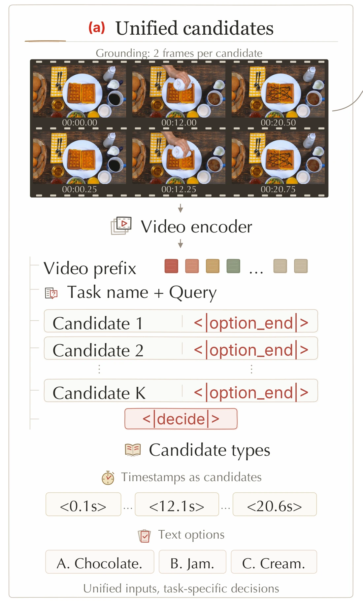
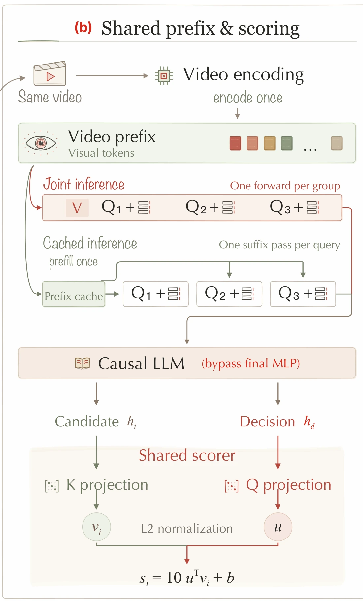
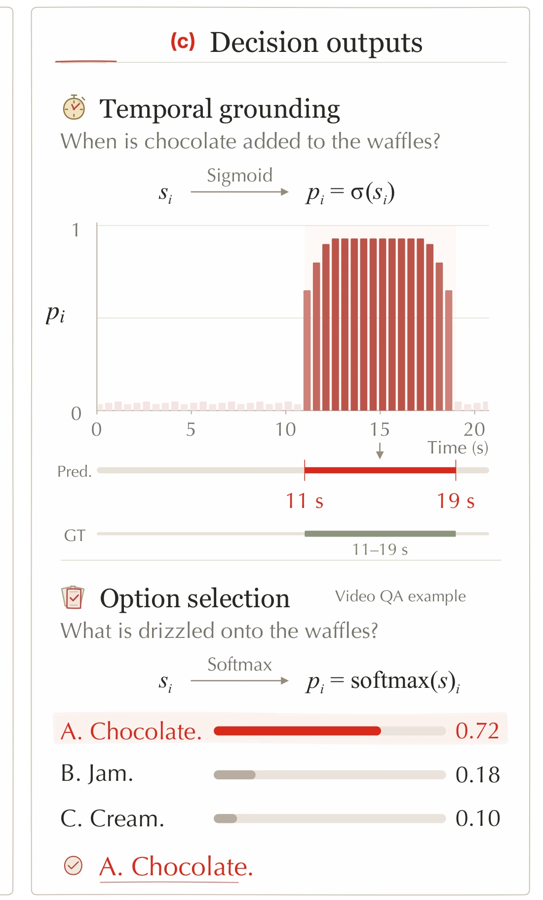

Direct scoring
With the same data and single-stage training, direct scoring improves both grounding and video QA.
| Model | Grounding Avg. mIoU | QA Avg. |
|---|---|---|
| Qwen3.5-4B AR SFT | 64.1 | 72.8 |
| VideoJev-4B | 65.4 | 74.7 |
System One Model for
Video Understanding and Interaction
1NJU2JD.com3UCAS4THU5XMU6SJTU7USTC8FDU
* Equal contribution ‡ Project lead † Corresponding author
VideoJev unifies temporal grounding and multiple-choice video question answering through a shared candidate-scoring interface. It predicts temporal intervals and answer options directly, while reusing video computation across questions.
Turning video understanding into intelligent action requires timely, repeated decisions. Many of these decisions are structured, even when the task itself is complex and open-ended. Discriminative vision models support efficient prediction but typically require task-specific designs, while video multimodal large language models (MLLMs) offer semantic flexibility yet rely on autoregressive generation even for simple decisions. We introduce VideoJev, a family of video System One models that combines pretrained multimodal understanding with efficient direct prediction. VideoJev unifies temporal grounding and multiple-choice video question answering through a shared candidate-scoring interface, directly evaluating temporal intervals and textual options against video evidence without autoregressive answer decoding. Because successive judgments often share the same visual context, VideoJev reuses visual computation through Cached inference for arriving queries and Joint inference for multiple queries in a single forward pass. Across three temporal grounding benchmarks, VideoJev-4B and VideoJev-35B-A3B improve mean mIoU over their backbones by 6.7 and 10.8 points, respectively, with measured inference speedups of 2.8–3.1×. On four video QA benchmarks, both achieve performance comparable to their backbones in Thinking mode, with measured inference speedups exceeding 100×. These results establish a unified, reusable decision interface, providing a foundation for visual agents that compose structured judgments into complex, open-ended workflows.
Temporal grounding + video QA
mIoU gain over 4B / MoE backbones
QA speedup vs. Thinking
Recorded predictions for temporal grounding and video question answering. Try your own video ↗
Score time intervals and answer options with one shared model.



Answer a group of questions in one forward pass.
Two model scales. Seven benchmarks.
Answer more questions with one shared video encoding.
10 grounding queries
vs. 5.98 s for Instruct
Grounding uses TimeLens-Bench annotations at 4 fps. QA uses video frames only, without audio or subtitles.
Latency is model forward time per question on Charades (grounding) or LVBench (QA), measured on H200 at batch size 1. It includes visual encoding, prefill and decoding, excluding preprocessing and transfers. All timed methods reuse the video prefix.
Timings average 40 videos per task from Charades and Video-Holmes, at 2 fps. Native questions repeat when fewer than ten are available; bands show 95% confidence intervals. Quality scores are measured separately on the complete benchmarks.
The plots use logarithmic time axes; the QA plot includes an axis break.
With the same data and single-stage training, direct scoring improves both grounding and video QA.
| Model | Grounding Avg. mIoU | QA Avg. |
|---|---|---|
| Qwen3.5-4B AR SFT | 64.1 | 72.8 |
| VideoJev-4B | 65.4 | 74.7 |
Evaluate questions together in a single forward pass while retaining strong prediction quality.
| Model / mode | Grounding Avg. mIoU | QA Avg. |
|---|---|---|
| 4B · Cached | 64.5 | 73.8 |
| 4B · Joint | 65.3 | 74.3 |
| 35B-A3B · Cached | 67.4 | 78.8 |
| 35B-A3B · Joint | 67.7 | 79.5 |
35B weights: FP32 for Cached; BF16 for Joint.
Higher option scores usually accompany higher accuracy, but confidence remains overestimated. Mean calibration error is 8.65 points for 4B and 8.13 for 35B-A3B.
Built on Qwen3.5-4B
Built on Qwen3.6-35B-A3B
@misc{zhu2026videojevmodelvideounderstanding,
title={VideoJev: System One Model for Video Understanding and Interaction},
author={Yuhan Zhu and Xiangyu Zeng and Qingyi Si and Chenxu Yang and Yifei Li and Luozheng Qin and Junhao Zhou and Dingyu Yao and Jun Zhang and Chuanyu Qin and Zhiqiu Zhang and Yuandong Yang and Yuqi Xu and Tianyu Zhang and Hongcheng Guo and Jiaqi Wang and Nan Duan and Limin Wang},
year={2026},
eprint={2610.18615},
archivePrefix={arXiv},
primaryClass={cs.CV},
url={https://arxiv.org/abs/2610.18615},
}